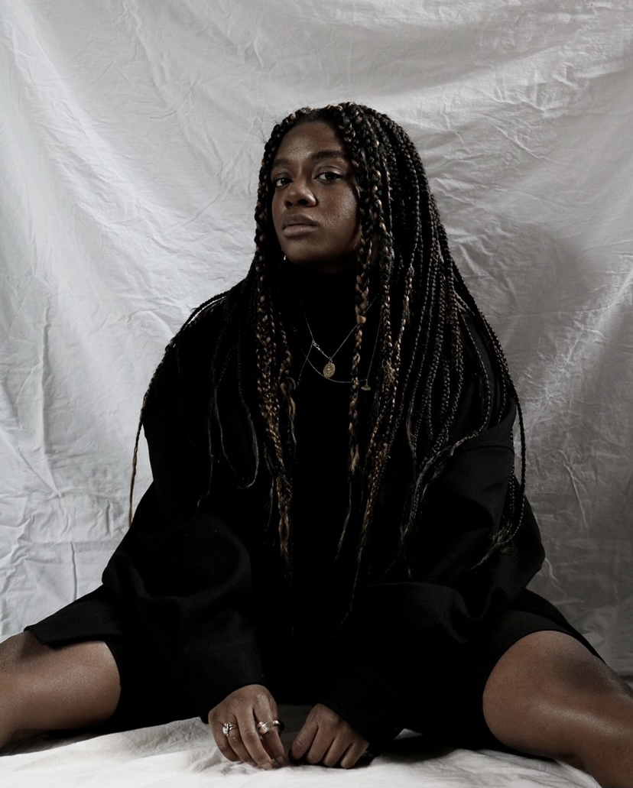

HOW WHY WHAT
I've always had a love for the arts. Fashion, food, music, art you name it. I love people, beautifull people and observing them. I studied fashion had to comumute to uni everyday. I sat in the train for more than and hour and observed people, the zeitgeist and scrolled on my phone for ages to feed my fuel for beautiful things. I decided to bring it all together in one blog, one website and cummilate my thoughts and obsession I found out abt while on the metro. That is how Metro Style Labe started three years ago and we've just kept growing and made it something more than just me. Metro Style Lab is your one stop shop to today's zeitgeist. We hope to inspire you and teach you some stuff a long the way. Happy reading lovelies Love, Suneyska
 Let's keep in touch beauties